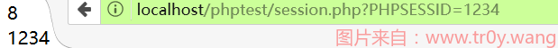
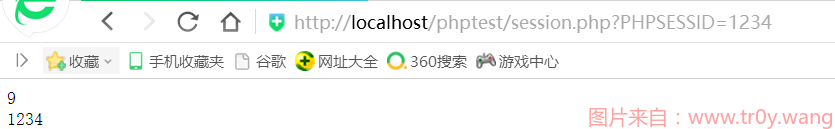

Session 固定
本文最后更新于：2023年5月4日 上午
让合法用户使用攻击者预先设定的 session ID 来访问网站, 一旦用户的会话 ID 被成功固定, 攻击者就可以通过此 session ID 来冒充用户访问
只要该 session ID 还是有效的, 没有被系统重新生成或者销毁
前言
基于 session 的攻击有很多种方式. 大部分的手段都是首先通过获得合法用户的 session, 然后冒充该用户来访问系统. 也就是说, 攻击者至少必须要获取到一个有效的 session 标识符, 用于接下来的身份验证.
获得合法用户的 session 有以下 3 种办法
- 猜测(猜测有效的 session 标识符, 类似暴力破解. 但是 PHP 生成 session ID 的还是比较安全的, 所以这种攻击方式基本上是不太可能成功的)
- 劫持(当通过 url 参数来传递 session 标识符的话, 容易暴露这个标识符. 使用 cookie 传递较为安全, 但是也会因为浏览器漏洞暴露 session 标识符)
- 固定(诱使用户通过攻击者预先选定的 session 标识符来访问系统. 一旦系统接收到了这个用户的请求, 并且使用用户传递过来的 session 标识创建了会话, 攻击者就可以使用这个 session 标识. )
准备
- 已知 session name(默认 session name 为
PHPSESSID) PHP Version: 5.5.12Apache Version:2.4.9- 浏览器*2
- POC 代码
session.php
1
2
3
4
5
6
7
8
9
10
11
12
13
14
15
16<?php
ini_set("session.use_trans_sid", 1);
ini_set("session.use_only_cookies", 0);
ini_set("session.use_cookies", 0);
session_start();
if (!isset($_SESSION['count']))
{
$_SESSION['count'] = 0;
}
else
{
$_SESSION['count']++;
}
echo $_SESSION['count'],'<br>';
echo session_id();
?>
测试
- 使用 firefox 打开
session.php, 刷新的时候可以看见$_SESSION['count']始终为 0,session_id不断变化 - 添加参数
PHPSESSID=1234, 每刷新一次,$_SESSION['count']增加 1 - 打开 360 浏览器, 带着刚才的参数
PHPSESSID=1234访问session.php, 发现$_SESSION['count']为 firefox 里的值+1, 成功固定 session


分析
这种简单的攻击方式只对那些接受来自 url 的 session 标识符起作用, 这也是为什么代码前面要进行设置, 目的就是为了让 PHPSESSID 通过 url 传递.
php 默认如果没有发现 cookie 中的 session 标识符的话, 就会查找是否有 session 标识符包含在 get 或者 post 数据中, 也就是 session 标识符处于 url 参数中或者表单的隐藏域中, 如果 php 发现了 session 标识符, 就不在重新生成一个新的随机 session ID 了, 它会使用来自请求中获得的 session ID 来标识此次会话.
来呀快活呀

Session 固定
https://www.tr0y.wang/2017/08/06/SessionFasten/